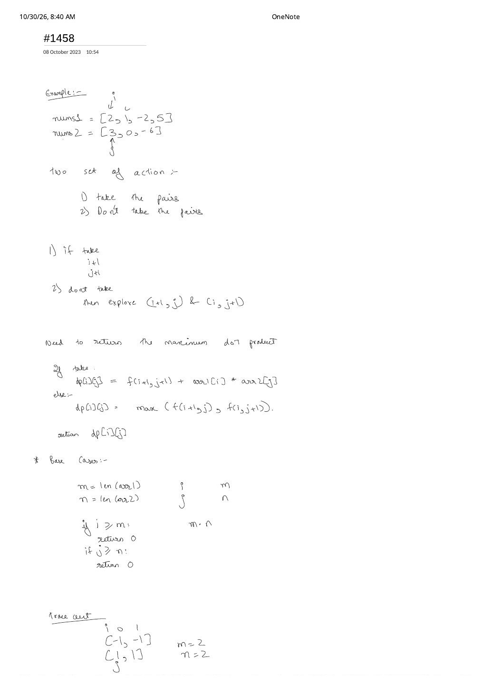
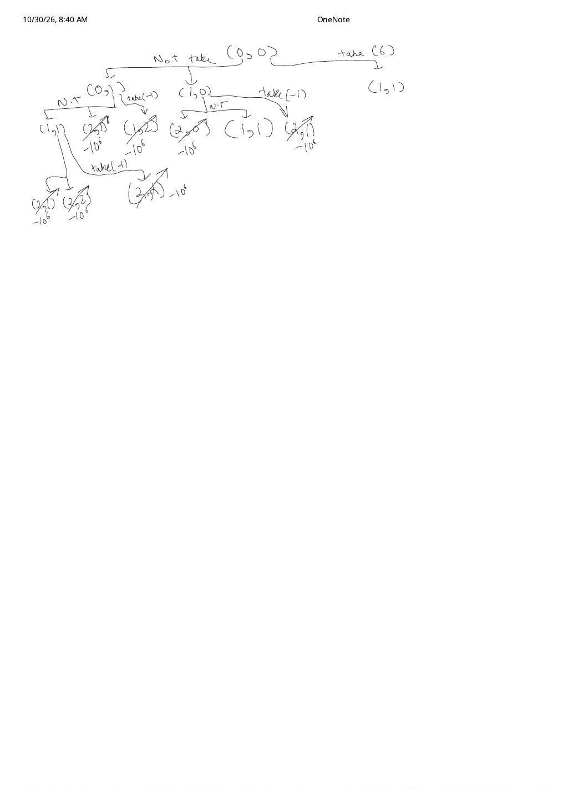

LC 1458: Max Dot Product of Two Subsequences — Catching & Fixing the Non-Empty DP Trap
Expanded from handwritten competitive coding study note: 05_1458.pdf (2 pages)
1. Problem Statement & Constraints
Given two integer arrays nums1 (length $m$) and nums2 (length $n$) with $1 \le m, n \le 500$ and $-1000 \le \text{nums1}[i], \text{nums2}[j] \le 1000$, return the maximum dot product between non-empty subsequences of nums1 and nums2 having the same length $k \ge 1$:
- Example 1 (Page 1 Top):
nums1 = [2, 1, -2, 5],nums2 = [3, 0, -6]$\longrightarrow$ pick[2, -2]and[3, -6]for $2 \cdot 3 + (-2)(-6) = 6 + 12 = \mathbf{18}$. - Example 2 (Page 1 Bottom — The Trap!):
nums1 = [-1, -1],nums2 = [1, 1]$\longrightarrow$ every possible pair product is $-1$, so the maximum non-empty dot product is-1(NOT0!).
2. The Page 1 $\to$ Page 2 Self-Correction in 05_1458.pdf
Look at how 05_1458.pdf catches a classic subsequence-DP bug by hand before writing final code:
Why Page 1's Initial Base Case (return 0) Fails on All-Negative Pairs
On Page 1, we write the two natural LCS-style transitions from index pair $(i, j)$:
- Take pair $(i, j)$: $\text{nums1}[i] \cdot \text{nums2}[j] + f(i + 1, j + 1)$
- Don't take pair: $\max\bigl(f(i + 1, j),\, f(i, j + 1)\bigr)$
with naive boundary check if i >= m or j >= n: return 0. At the bottom of Page 1, we immediately test nums1 = [-1, -1], nums2 = [1, 1] ($m = 2, n = 2$). If out-of-bounds returns 0, skipping every element walks to $(2, 0)$ and returns 0—representing the illegal empty subsequence ($k = 0$)!
On Page 2, drawing the full recursion tree from $(0, 0)$ replaces out-of-bounds leaves $(2, 1), (1, 2), (2, 0), (2, 2)$ with $-\infty$ (written as $-10^6$ on the scratchpad). That exposes the second half of the fix:
The Two-Part Non-Empty Subsequence DP Fix
- Out-of-bounds base case ($i = m$ or $j = n$) returns $-\infty$ (use
-1e9, strictly below $-10^6$!): Any pure-skip path that reaches the end without ever pairing two elements evaluates to $-\infty$ and loses to any real pair. (Important sentinel detail: since $-1000 \times 1000 = -10^6$ is an achievable single-pair answer on[-1000]vs.[1000], use-1e9rather than-1e6!) - Inside the
takebranch, wrap the recursive tail inmax(0, f(i + 1, j + 1)): Once we pick pair $(i, j)$, the non-empty requirement ($k \ge 1$) is already fulfilled! If $f(i + 1, j + 1) \lt 0$ (either because we hit an out-of-bounds $-\infty$ leaf or because every remaining suffix pair is negative), we are completely free to stop right after $(i, j)$ and add $0$ instead!
-∞ at the boundary, while max(0, f(i+1, j+1)) stops cleanly after picking a single -1 pair rather than compounding -1 + (-1) = -2.3. Brute $\to$ 2D Memoization $\to$ $\mathcal{O}(n)$-Space Rolling DP
- Brute Force Recursion ($\mathcal{O}(3^{m+n})$): Exponential branching across
take,skip i, andskip jwithout memoization. - 2D Memoization / Tabulation ($\mathcal{O}(mn)$ Time, $\mathcal{O}(mn)$ Space): Cache all $m \times n \le 2.5 \times 10^5$ states in
dp[m + 1][n + 1]initialized to-1e9. - Optimal Rolling-Row Tabulation ($\mathcal{O}(mn)$ Time, $\mathcal{O}(\min(m, n))$ Space): Because row $i$ depends only on
nextRow[j + 1],nextRow[j], andcurRow[j + 1], two 1D rows of length $n + 1$ suffice!
// LC 1458: Max Dot Product of Two Subsequences — O(m * n) Time, O(min(m, n)) Space
#include <algorithm>
#include <vector>
using namespace std;
class Solution {
public:
int maxDotProduct(vector<int>& nums1, vector<int>& nums2) {
if (nums1.size() < nums2.size()) {
return maxDotProduct(nums2, nums1); // Ensure nums2 is the shorter array
}
int m = (int)nums1.size(), n = (int)nums2.size();
const int NEG_INF = -1e9; // Strictly below min valid product (-1000 * 1000 = -1e6)
vector<int> nextRow(n + 1, NEG_INF), curRow(n + 1, NEG_INF);
for (int i = m - 1; i >= 0; --i) {
fill(curRow.begin(), curRow.end(), NEG_INF);
for (int j = n - 1; j >= 0; --j) {
int prod = nums1[i] * nums2[j];
int take = prod + max(0, nextRow[j + 1]); // Non-empty already satisfied!
int skip = max(nextRow[j], curRow[j + 1]);
curRow[j] = max(take, skip);
}
swap(nextRow, curRow);
}
return nextRow[0];
}
};4. Complexity Proof & Key Edge Cases
- Time Complexity — $\mathcal{O}(m \cdot n)$: Two nested loops evaluate each $(i, j)$ cell in $\mathcal{O}(1)$ arithmetic ($500 \times 500 = 2.5 \times 10^5$ operations).
- Space Complexity — $\mathcal{O}(\min(m, n))$: Swapping inputs so $n \le m$ keeps
curRowandnextRowat $\le 501$ integers total. - Key Edge Cases:
- Opposite-sign arrays (e.g.
nums1all negative,nums2all positive): Every pair product is negative; optimal answer equals $\max(\text{nums1}) \times \min(\text{nums2})$ (a single least-negative pair), which our DP returns naturally. - Extreme single-element case
nums1 = [-1000],nums2 = [1000]: Answer is $-1{,}000{,}000$. UsingNEG_INF = -1e9prevents collision with $-10^6$ while staying far away fromINT_MINunderflow! - Maximum positive sum: At most $500 \times (1000 \times 1000) = 5 \times 10^8$, safely inside 32-bit signed
int.
- Opposite-sign arrays (e.g.
From the Handwritten Notes
View original handwritten page 1 — 05_1458.pdf (Take/skip recurrence & [-1, -1] vs [1, 1] edge-case setup)


05_1458.pdf Page 1: Formulating take vs. don't-take choices on [2,1,-2,5] & [3,0,-6], and setting up the [-1,-1] vs. [1,1] trace.View original handwritten page 2 — 05_1458.pdf (Full recursion tree with -10^6 out-of-bounds base cases)


05_1458.pdf Page 2: Tracing why out-of-bounds states must return $-\infty$ instead of $0$ so empty subsequences are rejected.